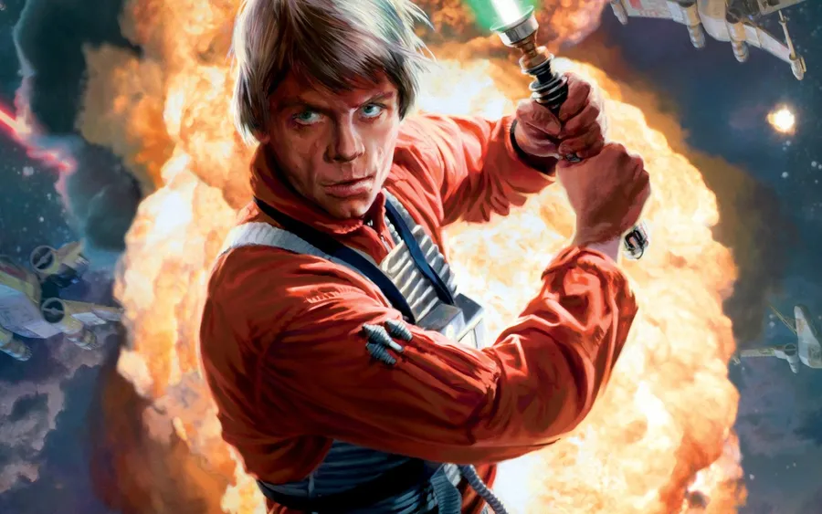
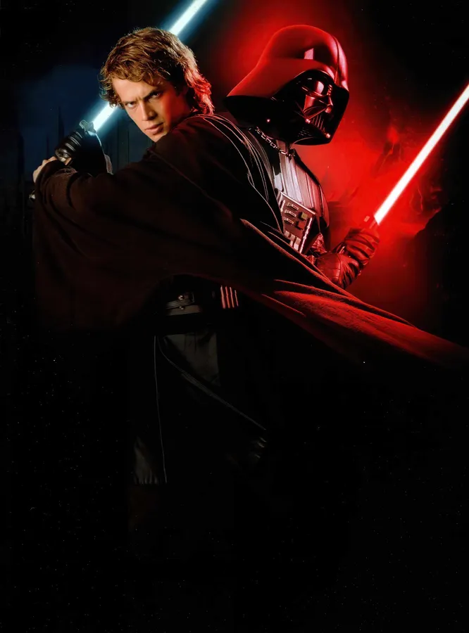
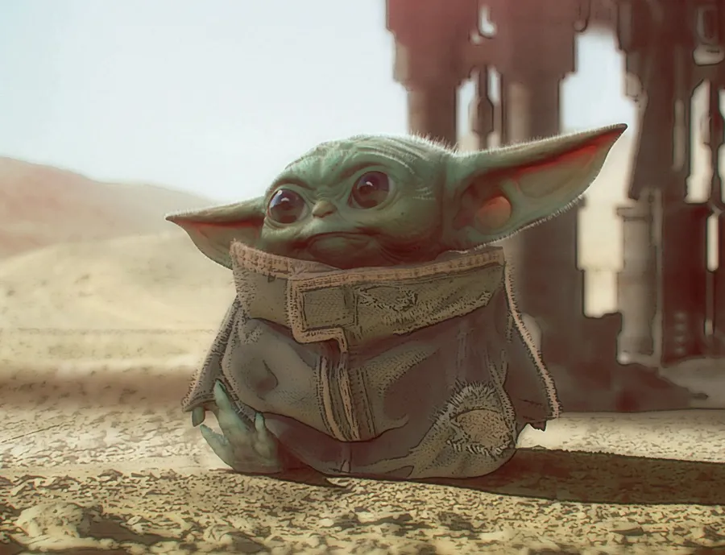

Luke Skywalker
Luke Skywalker é um Jedi lendário que ajudou a derrotar o Império Galáctico. Filho de Anakin Skywalker e Padmé Amidala.

Darth Vader
Anakin Skywalker, também conhecido como Darth Vader, é um Lorde Sith que caiu para o lado negro da Força.

Leia Organa
Princesa Leia Organa é líder da Aliança Rebelde, diplomata e estrategista, conhecida por sua coragem e inteligência.
Rey
Rey é uma jovem Jedi que descobre sua conexão com a Força. Determinada e corajosa, luta pela paz da galáxia.

Kylo Ren
Kylo Ren, nascido Ben Solo, é filho de Leia Organa e Han Solo, conflituoso e líder da Primeira Ordem.

Yoda
Yoda é um mestre Jedi milenar, sábio e poderoso, responsável por treinar gerações de Jedi.